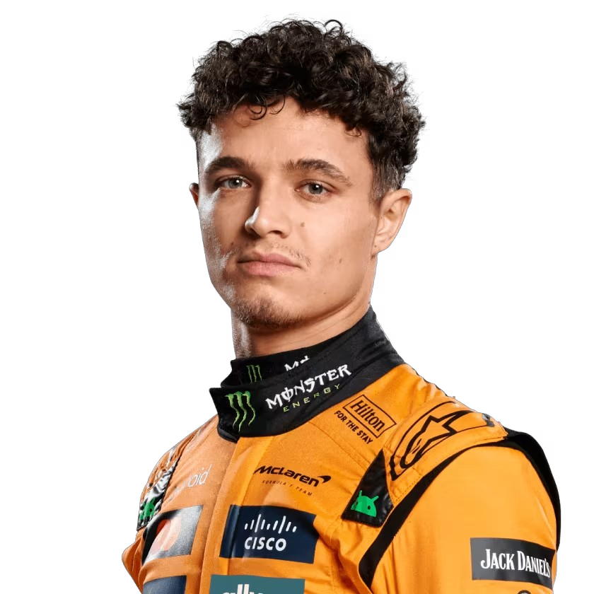
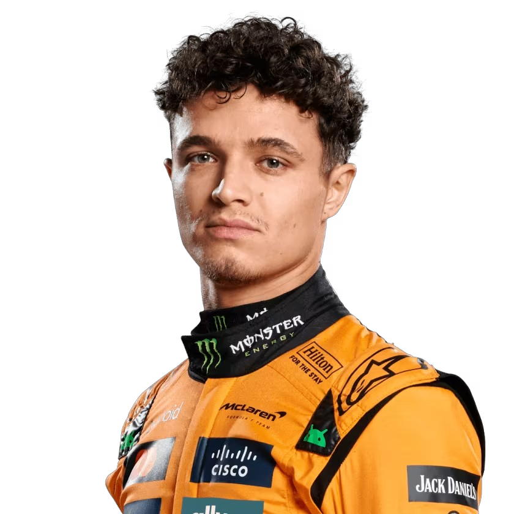

Mclaren
McLaren es uno de los equipos más emblemáticos y exitosos en la historia de la Fórmula 1, fundado en 1963 por el piloto neozelandés Bruce McLaren. Su primera participación en la F1 fue en 1966.
Desde sus inicios, McLaren se ha destacado por su enfoque en la innovación y la ingeniería, sentando las bases para una trayectoria llena de triunfos. Su primera victoria llegó en el Gran Premio de Bélgica de 1968, con Bruce McLaren al volante.
A lo largo de su historia, McLaren ha tenido "años dorados", especialmente en la década de 1980, donde lograron un dominio extraordinario con pilotos de la talla de Niki Lauda y Alain Prost. La asociación con motores TAG Porsche fue clave para este éxito. Destaca la temporada de 1988, donde con el legendario monoplaza MP4/4, el equipo ganó 15 de las 16 carreras del campeonato, con una intensa rivalidad entre Prost y Ayrton Senna.
Después de la partida de Prost, McLaren siguió dominando a principios de los años 90 con Ayrton Senna, quien ganó varios campeonatos de pilotos. Otros pilotos legendarios como Mika Häkkinen (ganador de dos campeonatos en 1998 y 1999) y Lewis Hamilton (campeón en 2008) también han contribuido al palmarés del equipo.
En total, McLaren ha conseguido:
12 Campeonatos Mundiales de Pilotos.
8 Campeonatos Mundiales de Constructores.
Más de 180 victorias en Grandes Premios.
Además de su éxito en la Fórmula 1, McLaren también ha tenido logros significativos en otras competiciones, como el dominio en la serie Can-Am y tres victorias en las 500 Millas de Indianápolis.
Considerado uno de los "cuatro grandes" equipos de la Fórmula 1 (junto a Williams, Ferrari y Mercedes), McLaren ha sabido adaptarse a los cambios del deporte y, a pesar de periodos de menor rendimiento, sigue siendo un contendiente importante, buscando regresar a lo más alto de la parrilla con su enfoque en nuevos talentos y asociaciones estratégicas, como la de Mercedes como proveedor de motores desde 2021..
- País: Inglaterra
- Base: Woking, Surrey, Inglaterra
- Debut: 1963

.png)
 
